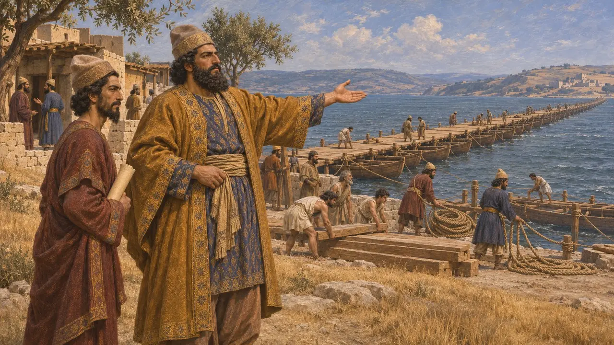
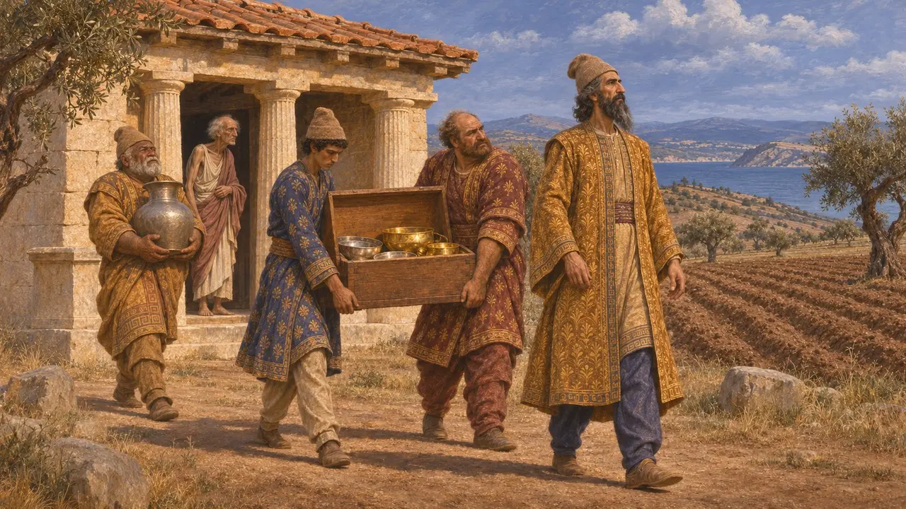
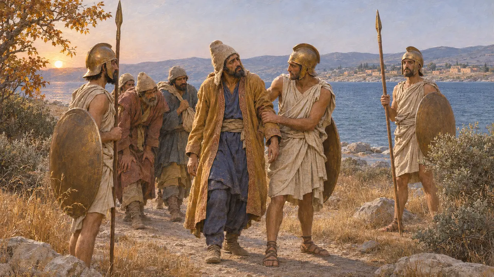
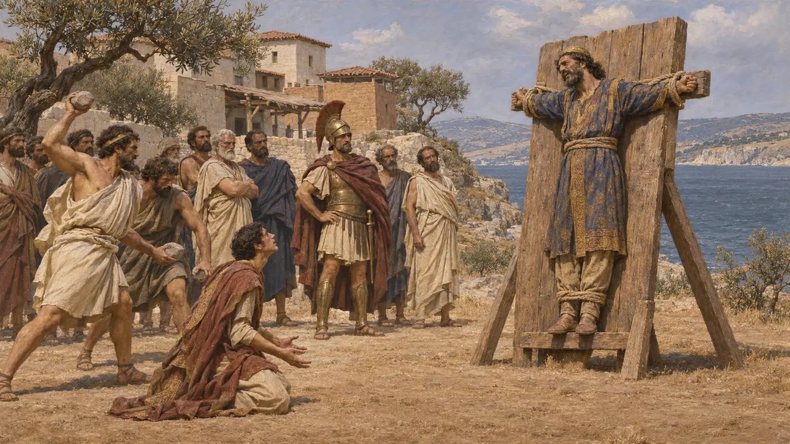
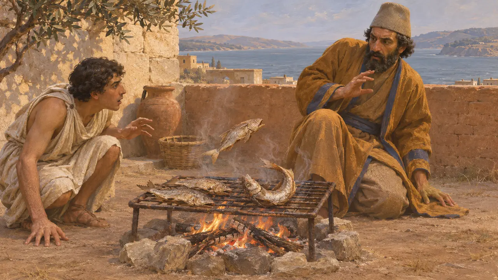
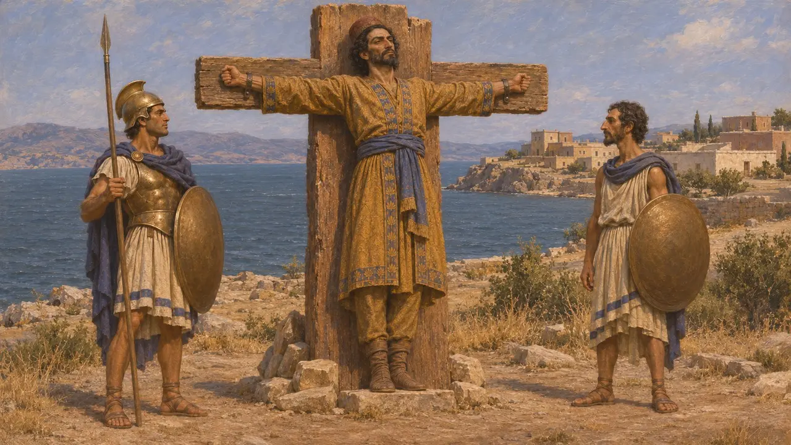

Artaycte
Governatore persiano di Sesto sull'Ellesponto, messo a morte dagli Ateniesi nel 479 o 478 a.C.
Nel gioco: Livello 11: Il finale, Micale
Artaycte fu il governatore persiano di Sesto sotto Serse. Erodoto racconta che saccheggiò il santuario di Protesilao a Eleunte, poi resistette a Sesto dall'autunno del 479 a.C. finché la fame non costrinse la guarnigione alla fuga. Gli Ateniesi guidati da Santippo lo catturarono e lo uccisero, ed Erodoto conclude la sua narrazione con questo episodio.
Nel gioco: Artaycte non ha una meccanica propria. Il gioco lo menziona solo negli articoli sugli eventi dell'assedio di Sesto e della battaglia di Micale, dove Santippo lo fa crocifiggere.

Governatore di Sesto
Racconto anticoErodoto definisce Artaycte figlio di Cherasmi e governatore persiano di Sesto, e afferma che aiutò Serse nella costruzione del ponte sull'Ellesponto. Lo descrive come un uomo astuto e malvagio. Erodoto è l'unica fonte per la sua carriera, e non si conosce alcun documento persiano che lo nomini.
Herodotus 7.33, 9.116

Il santuario di Protesilao
Racconto anticoErodoto racconta che il santuario di Protesilao a Eleunte, nel Chersoneso tracio, custodiva un ricco tesoro. Artaycte chiese a Serse di concederglielo, sostenendo che il suo eroe aveva marciato contro la terra persiana, e Serse acconsentì. Erodoto aggiunge che Artaycte portò via il tesoro, mise a coltura il suolo sacro e si comportò in modo indecente nel santuario.
Herodotus 9.116

L'assedio di Sesto
Racconto anticoDopo Micale, nel 479 a.C., la flotta greca fece rotta verso l'Ellesponto e trovò i ponti già distrutti. Gli Ateniesi guidati da Santippo assediarono Sesto, dove si erano radunati Persiani e molti abitanti del luogo. Erodoto afferma che in autunno il cibo scarseggiò e che Artaicte ed Eobazo fuggirono di notte. Gli abitanti della città avvertirono i Greci, che li inseguirono e catturarono Artaicte presso Egospotami.
Herodotus 9.114-118

Cattura e morte
Racconto anticoErodoto racconta che Artaycte offrì una grossa somma per sé e per suo figlio, ma Santippo rifiutò, perché gli abitanti di Eleunte esigevano vendetta per il santuario. Artaycte fu inchiodato a delle tavole e appeso, e suo figlio fu lapidato sotto i suoi occhi. Erodoto narra questo episodio proprio alla fine del suo racconto.
Herodotus 9.118-120

Il presagio del pesce
Leggenda posterioreErodoto racconta che del pesce secco su un fuoco balzò e si contorse, e che Artaicte lo interpretò come un segno di Protesilao. Il racconto è costruito come una storia morale sulla punizione divina per il sacrilegio. Va letto come una storia raccontata dai Greci, non come un resoconto di ciò che disse Artaicte.
Herodotus 9.120

Come si interpreta la morte
ContesoErodoto descrive l'inchiodamento su tavole, e gli autori moderni spesso lo chiamano crocifissione, benché la formulazione greca non sia esatta. Gli storici discutono anche in che misura il racconto sia plasmato per chiudere le Storie, con gli Ateniesi che puniscono un Persiano per la stessa empietà mostrata dalla spedizione di Serse. Poiché lo raccontano solo fonti greche, il punto di vista persiano su Artaycte resta ignoto.
Herodotus 9.120
Fonti
- Herodotus 9.114-120
- Herodotus 7.33
- Thucydides 1.89